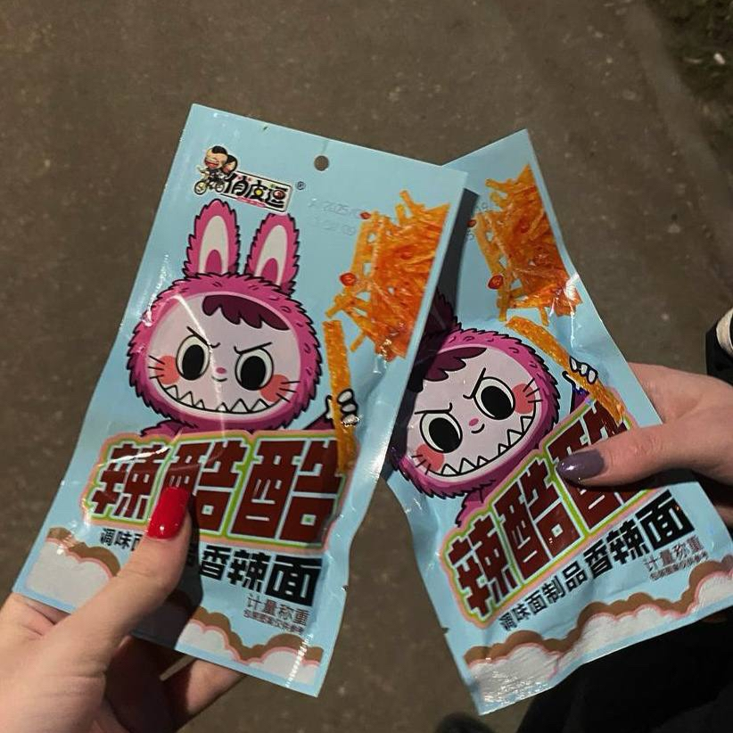
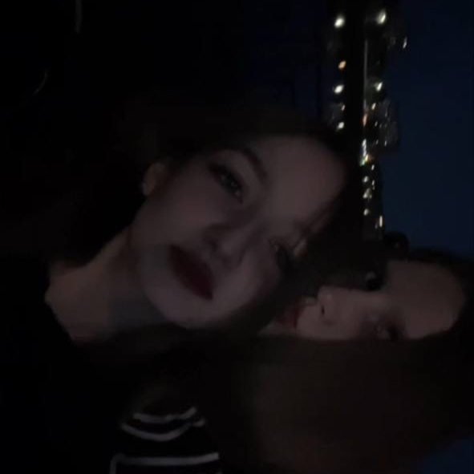
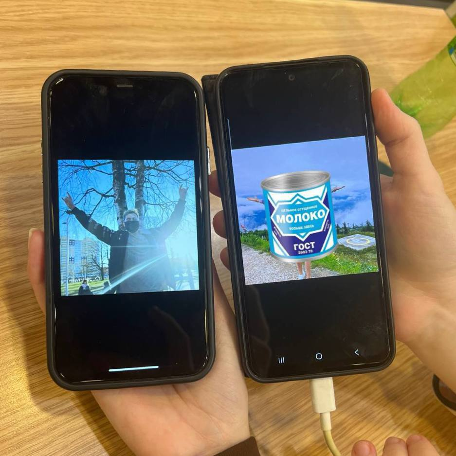

Наши воспоминания

Наше любимое латяо, когда мы открыли для себя Миди, нас оттуда за уши надо было оттаскивать

Никто не умеет также перемывать косточки, как мы с тобой
Моя любимая сплетница
Моя любимая сплетница
А как же когда на ночевке мы писали и кошмарили всех кого можно и нельзя,
а как же красные трусики, и после этого мы у них всех в чс
«Красные кружевные стринги»
а как же красные трусики, и после этого мы у них всех в чс
«Красные кружевные стринги»
Или вспомнить наш эпический маршрут к Мики — через трубы, потом гаражи
Наши любимые поездки на машинке

Помнишь то море, в которое мы зашли всего несколько раз и то ножки помочить и как потом возвращались домой

Или же наша первая ссора, из-за одного недоразумения, сама знаешь как его зовут
Новогодняя ночь, правда или действие, посиделки на кухне со всеми, когда уже никто не помнит, который час, но всем хорошо
Жаль конечно что они оказались такими ***
Жаль конечно что они оказались такими ***
Тусовки, где музыка играла так громко, что мы ничего не слышали, кроме друг друга
Потому что у нас была своя волна
Потому что у нас была своя волна
Пивной двор — место, где мы просидели сотню раз, выпили литры гадости и переговорили о жизни так, будто нам платят за каждую новую сплетню. Выйб был нереальный. А помнишь того мужика? 'Дайте обниму вас хотя бы, если есть что-то, то и прижаться можно' — ужас, но зато есть что вспомнить